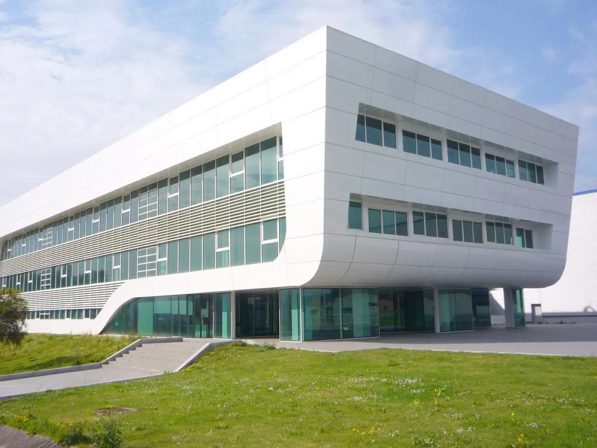

Blog · Pymes
Solo 4 de cada 100 pymes industriales españolas usan IA. Las que lo hacen venden casi tres puntos más
El Barómetro IndesIA 2026, presentado el 1 de octubre en Madrid sobre 131.554 pymes industriales, sitúa la adopción en el 4,1 %: el doble que en 2024, y aun así nada. Lo que más se usa no es lo que sale en la tele: automatización de flujos y administración, no robots.

Vamos con los números porque son los que importan. De 131.554 pymes industriales analizadas por IndesIA con Informa, el 4,1 % usa IA de forma identificable. En 2024 era el 2,1 %; en 2025, el 2,9 %. Se ha duplicado en dos años y sigue siendo una de cada veinticinco. Por tamaño: las medianas (50 a 250 empleados) van al 6,5 %, las pequeñas al 5,1 %, las micro al 3,6 %. Por territorio, Madrid (6,3 %), Cataluña (4,9 %) y País Vasco (4,2 %) delante; Castilla-La Mancha (1,7 %) y Castilla y León (2,0 %) detrás.
Lo que de verdad usan es lo interesante. La automatización de flujos y decisiones (31,4 %) y la IA generativa (28,5 %) ya superan al machine learning clásico (26,5 %). Y los casos de uso principales son administración y gestión (27,7 %) y marketing y ventas (25,7 %). No la fábrica: la oficina. Es decir, lo que cualquier negocio tiene.
La cifra que convence a un dueño: las pymes que usan IA crecen en ventas un 7,25 % frente al 4,34 % de las que no. Son 2,9 puntos. El informe no demuestra que una cosa cause la otra, pero la correlación está ahí y va en la dirección que esperarías. El talento es el cuello de botella: de los 151.000 profesionales de datos e IA de España, solo el 7,7 % trabaja en pymes de menos de 49 empleados, y el 64,65 % de las ofertas de IA no se cubre.
Valero Marín, presidente de IndesIA, lo dijo sin adornos: «Necesitamos más ambición». Y Lieven Van der Veken, de QuantumBlack, la unidad de IA de McKinsey: «El reto ya no es adoptar la tecnología, sino convertir su potencial en impacto real». La inversión pública en IA fue de 4.609 millones en 2025, un 0,5 % más que el año anterior.
Fuentes
- Barómetro IndesIA de Uso de la IA en pymes 2026 · IndesIA
- La IA apenas llega al 4,1% de las pymes industriales españolas · El Español / Invertia
- El 96% de las pymes industriales españolas todavía no usa IA · Conecta Industria
- La adopción de IA en las pymes españolas alcanza el 4,1% · IT User
Lectura recomendada
The state of AI in 2026: On the road to ROI · McKinsey & Company / QuantumBlack, 2026
Créditos
Texto: Sara Benali, columnista independiente del blog de IFENZA (firma editorial elaborada con ayuda de IA; hechos verificados en las fuentes citadas). Imagen: Zarateman, vía Wikimedia Commons · CC0.
Sara Benali
Pymes, dinero y resultadosAntes llevaba la contabilidad de un negocio familiar. Solo le interesa la IA que ahorra horas o trae clientes. Traduce cada noticia a «qué hago yo el lunes».